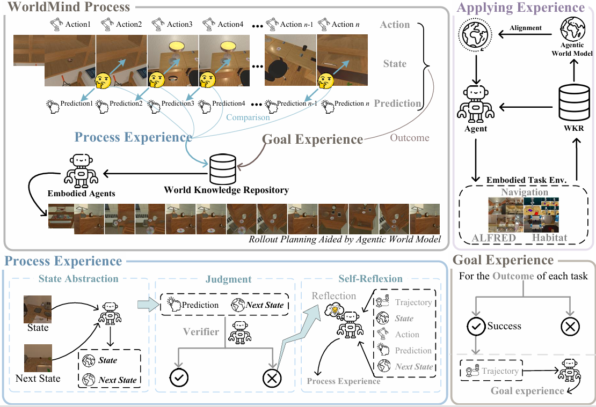

Large Language Models (LLMs) often generate plans that are logically sound but physically unexecutable—a phenomenon we term Physical Hallucination[cite: 30]. WorldMind aligns these models by learning from experience.
Goal: "Slice the bread."
Plan:
1. Walk to table.
2. Slice bread.
Outcome: FAILURE. The agent attempts to slice the object without holding a knife[cite: 92]. It understands the why but misses the physical how.
Goal: "Slice the bread."
Internal Simulation: "Prediction Error: Cannot slice without tool." -> Refinement.
Plan:
1. Find knife.
2. Pick up knife.
3. Slice bread.
Outcome: SUCCESS. Uses Process Experience to enforce physical constraints.
Current Large Language Models (LLMs) exhibit a critical modal disconnect: they possess vast semantic knowledge but lack the procedural grounding to respect the immutable laws of the physical world. [cite_start]Consequently, while these agents implicitly function as world models, their simulations often suffer from physical hallucinations—generating plans that are logically sound but physically unexecutable [cite: 29-30].
To bridge this gap, we introduce WorldMind, a framework that autonomously constructs a symbolic World Knowledge Repository (WKR) by synthesizing environmental feedback. [cite_start]Specifically, it unifies Process Experience to enforce physical feasibility via prediction errors and Goal Experience to guide task optimality through successful trajectories [cite: 33-34]. [cite_start]Experiments on EB-ALFRED and EB-Habitat demonstrate that WorldMind achieves superior performance compared to baselines with remarkable cross-model and cross-environment transferability[cite: 35].
WorldMind transforms autonomous agents into empirical learners. [cite_start]Instead of relying on resource-intensive training, it employs a Predict-Act-Verify loop to align the agent's internal world model with reality[cite: 230].
Figure 2: Overview of the WorldMind Framework. The agent autonomously constructs a World Knowledge Repository (WKR) by unifying Process Experience (from prediction errors) and Goal Experience (from successful trajectories).
We evaluated WorldMind on EB-ALFRED and EB-Habitat. [cite_start]The framework consistently outperforms baselines (ReAct, BON, SimuRA, etc.) in both Success Rate (SR) and Goal-Conditioned Success (GC)[cite: 354].
| Backbone | Method | EB-ALFRED (SR) | EB-Habitat (SR) |
|---|---|---|---|
| GPT-3.5-turbo | ReAct | 44.4% | 43.6% |
| WorldMind (Ours) | 48.0% | 48.8% | |
| GPT-4.1-mini | ReAct | 41.6% | 41.6% |
| WorldMind (Ours) | 50.0% | 50.8% |
Table 1: Comparison of Success Rates. WorldMind achieves state-of-the-art performance by reducing physical hallucinations[cite: 334, 396].
A key finding is that the experience learned by one model (e.g., GPT-4.1-mini) can be transferred to another (e.g., GPT-3.5-turbo), significantly improving the latter's performance. [cite_start]This confirms that the constructed world knowledge captures universal physical laws independent of the specific backbone model[cite: 111, 410].
@inproceedings{anonymous2026worldmind,
title={Aligning Agentic World Models via Knowledgeable Experience Learning},
author={Anonymous Authors},
booktitle={Proceedings of the 64th Annual Meeting of the Association for Computational Linguistics (ACL)},
year={2026}
}